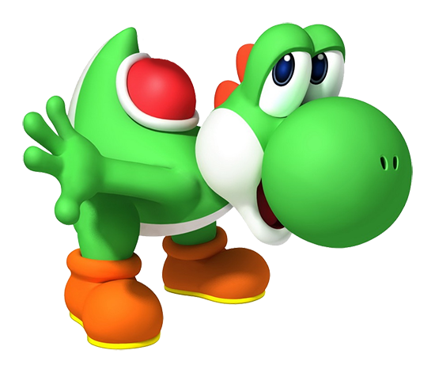
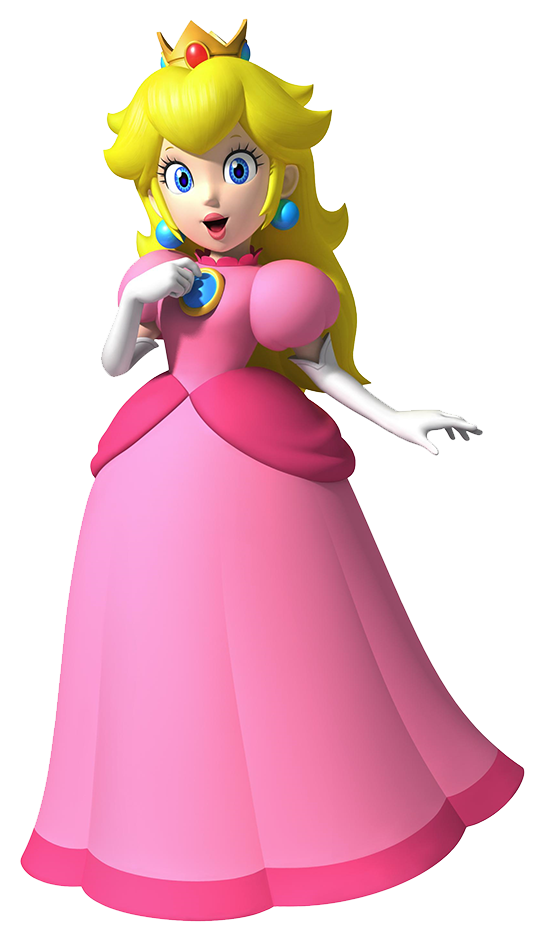
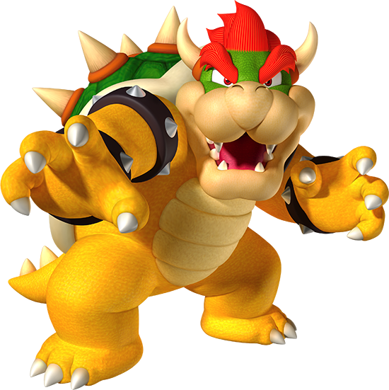
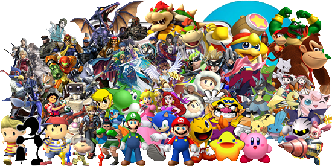
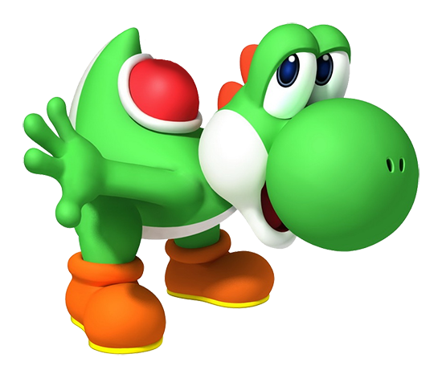
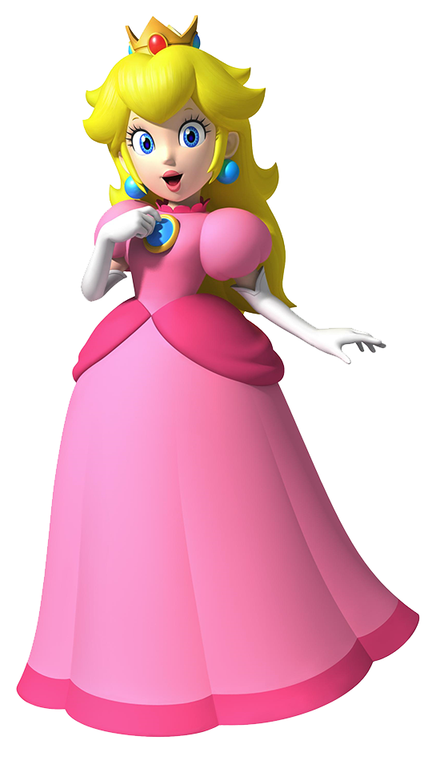
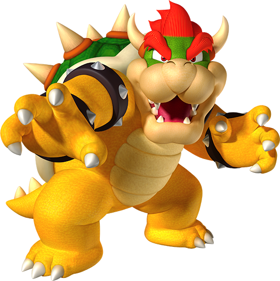
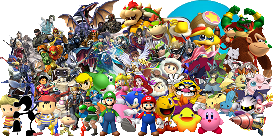
Nintendo Co., Ltd. is a Japanese multinational consumer electronics company headquartered in Kyoto, Japan. Nintendo is the world's largest video game company by revenue. Founded on September 23, 1889 by Fusajiro Yamauchi, it originally produced handmade hanafuda playing cards. By 1963, the company had tried several small niche businesses, such as cab services and love hotels.
Abandoning previous ventures in favor of toys in the 1960s, Nintendo then developed into a video game company in the 1970s, ultimately becoming one of the most influential in the industry and Japan's third most valuable listed company with a market value of over US$85 billion. Nintendo of America is also the majority owner of the Seattle Mariners Major League Baseball team.
The word "Nintendo" can be roughly translated from Japanese to English as "leave luck to heaven." As of March 31, 2014, Nintendo reports historically cumulative sales of over 670.43 million hardware units and 4.23 billion software units.
Introduced in 1985, the NES was an instant hit. Over the course of the next two years, it almost single-handedly revitalized the video game industry. Selling over 60 million units, people brought games like Mario and Zelda into their homes for the first time on the NES.
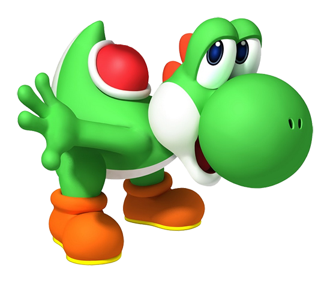
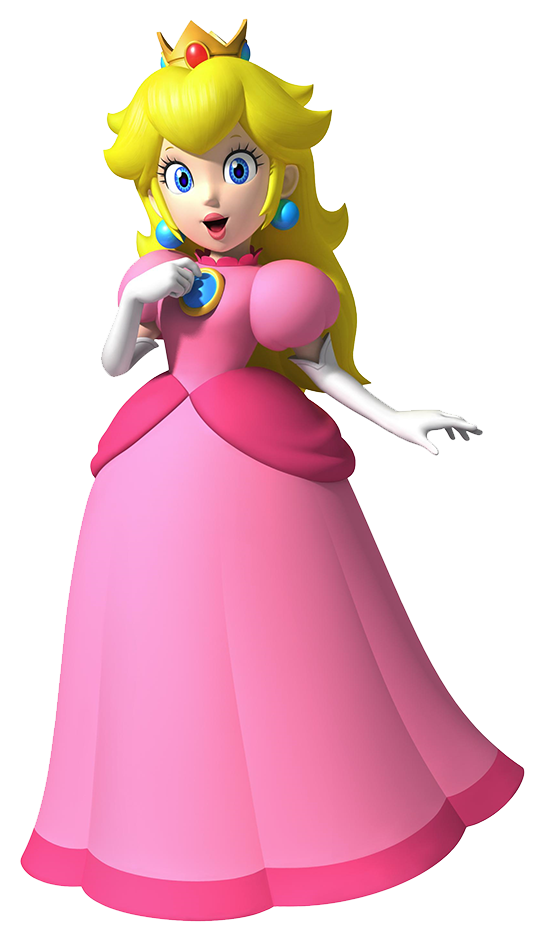
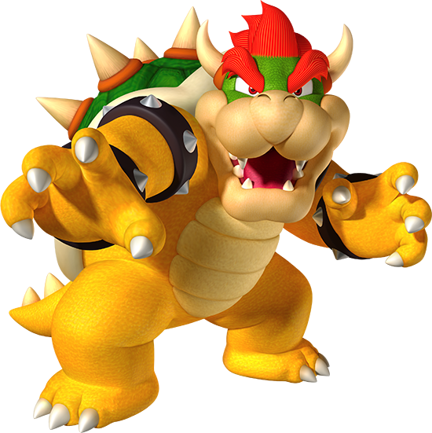
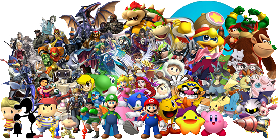